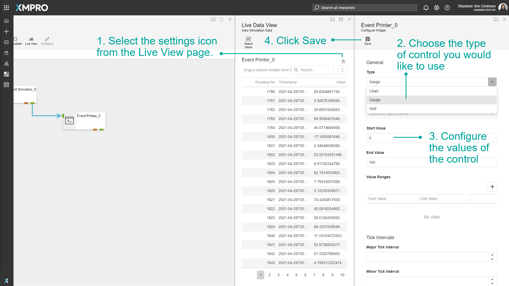

Use Live View
When a Data Stream is published, the Live View option becomes visible to allow you to view the data that is being processed by the Agents in the Stream. The way the data is displayed can be changed from a grid view to a gauge or a chart. This is useful for viewing the flow of data in real time and is also, therefore, a good tool to use when debugging.
Note
It is recommended that you read the article listed below to improve your understanding of Live Data.
Viewing Live Data
To view this data, publish your Stream first, then select the "Live View" button. Follow the steps below:
- Select Live View after publishing your Stream.
- Select the Agents you would like to view data for.
Note
Make sure your Data Stream is published before trying to open the Live View.
Prior to v4.3.7, it was important to always close the Live View before navigating away. Otherwise, connections were left open. If these build up over time and affect performance, an admin can reset them here.


Change Live Data Display
To change the type of control the live data is displayed in, follow the steps below:
- Select the settings icon from the Live View page.
- Choose the type of control you would like to use.
- Configure the values of the control.
- Click Save.

Last modified: February 25, 2026